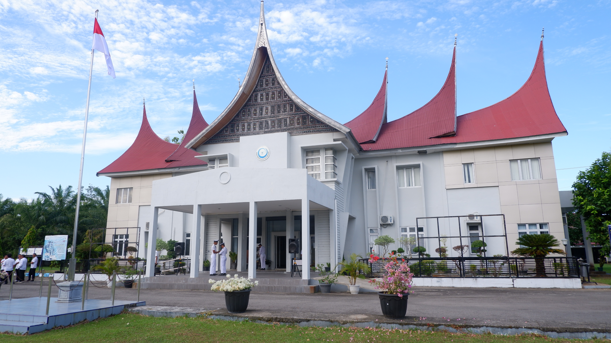
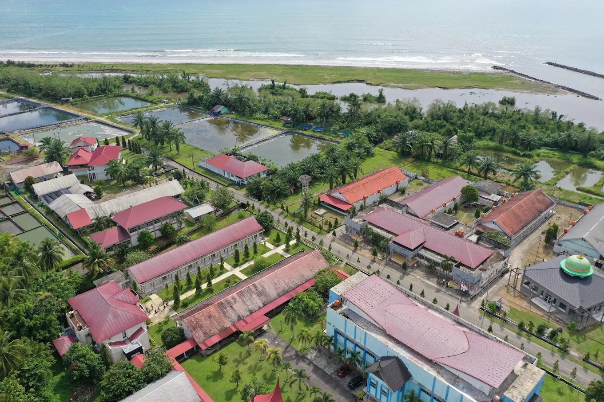
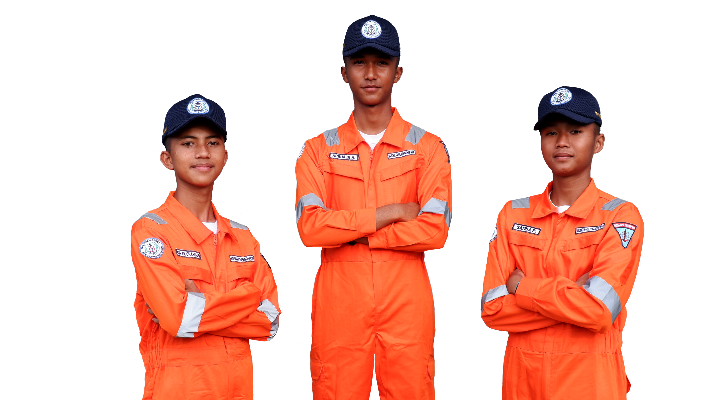
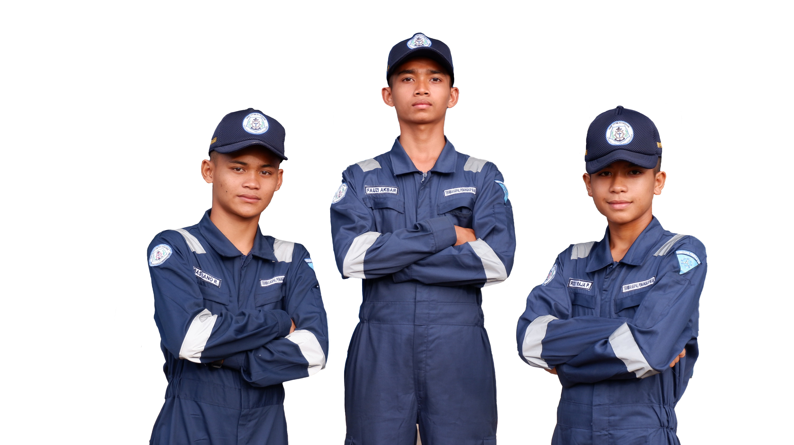
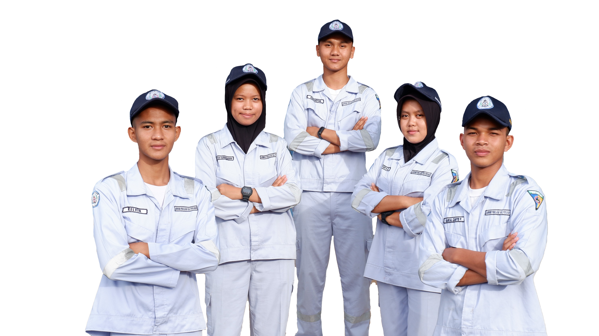

Mencetak tenaga kerja yang kompeten, disiplin, dan berkarakter di bidang kelautan dan perikanan. Terletak di pesisir Pariaman dengan fasilitas pendukung modern.

Sekolah Usaha Perikanan Menengah (SUPM) Pariaman adalah lembaga pendidikan di bawah Kementerian Kelautan dan Perikanan yang berdedikasi tinggi untuk menciptakan tenaga kerja ahli di sektor maritim.
Menjadi pusat unggulan pendidikan kelautan yang menghasilkan SDM yang mandiri dan kompetitif.

ilmu navigasi dan pengoperasian kapal penangkap ikan

mesin dan sistem teknis kapal perikanan

budidaya organisme perairan di laut dan tambak air payau

pengolahan dan pengawetan hasil perikanan
Lulusan kami dibekali dengan berbagai sertifikasi keahlian standar nasional dan internasional untuk menjamin kesiapan kerja di industri maritim dan pengolahan.
Punya pertanyaan terkait PPDB, administrasi, atau kerja sama? Silakan kirimkan pesan Anda melalui formulir di bawah ini atau kunjungi kantor kami.